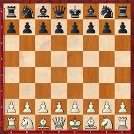
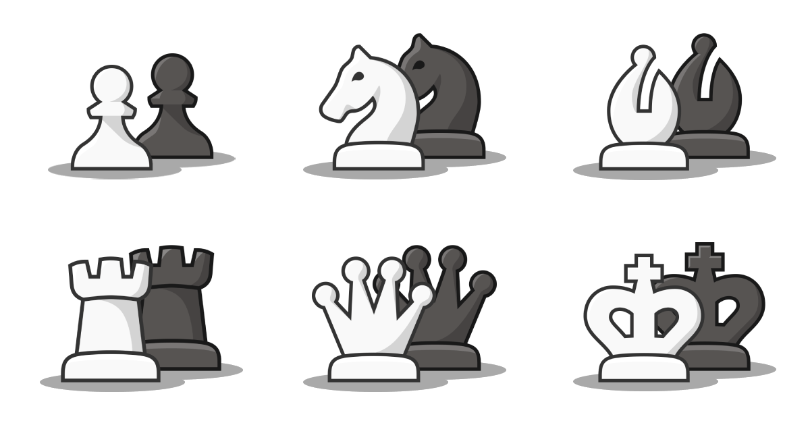

El Ajedrez
 El ajedrez es un juego de tablero entre dos contrincantes en el que cada uno dispone al inicio de dieciséis piezas móviles,
desiguales en importancia y valor, que se desplazan sobre un tablero capturando piezas del jugador contrario, según ciertas reglas.
En su versión de competición, está considerado como un deporte,aunque en la actualidad tiene claramente una dimensión social,educativa y terapéutica.
Piezas de Ajedrez

- El rey se puede mover en cualquier dirección (vertical, horizontal y diagonales) avanzando o retrocediendo una sola casilla (excepto en el enroque, en el cual se mueve dos casillas).
- La dama, también conocida como reina, se puede mover en cualquier dirección (vertical, horizontal y diagonales) avanzando o retrocediendo en el tablero el número de casillas que se desee, hasta topar con otra pieza o el borde del tablero.
- El alfil solo se puede mover en dirección diagonal, tantas casillas como se desee.
- La torre solo se puede mover en las direcciones verticales y horizontales, no en diagonal, las casillas que se desee.
- El caballo, según la definición oficial, se puede mover a la casilla más cercana que no se encuentre en su propia fila, columna o diagonal, aunque para simplificar se dice que se mueve avanzando dos casillas en vertical y una en horizontal, o viceversa, realizando un movimiento de ‘L’, siendo la única pieza que puede saltar por encima de las demás piezas.
- El peón, en su primer movimiento puede avanzar una o dos casillas en dirección vertical; después de su por primer movimiento solo puede avanzar una casilla en cada movimiento en dirección vertical. A diferencia del resto de piezas no puede ir hacia atrás y no puede capturar las piezas contrarias que se encuentran en la misma columna en la que se mueve; solo podrá hacerlo si se encuentran a una casilla en diagonal respecto a él (excepto en la captura al paso). Un peón debe transformarse en un alfil, caballo, torre o dama del mismo color, a elección del jugador, si es capaz de alcanzar la última fila del tablero opuesta a la de su bando, por lo que un peón puede adquirir un enorme poder táctico en determinadas posiciones donde no tiene oposición para «coronar».